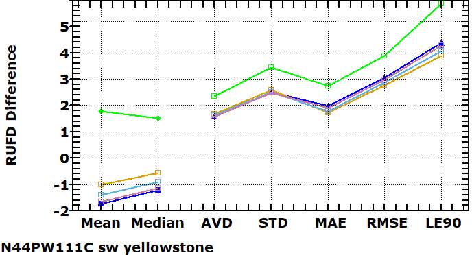

Other Figures For
DEMIX Other Figures For
DEMIX
Other Figures For
DEMIX Other Figures For
DEMIX Places with options to create graphics
| Image | Database Needed | Interpretation | X-axis | Y-axis | Directions | Options |
 |
Summary for a single parameter's(elevation, slope, roughness) difference distribution, with each test DEM in a single line. | DEMIX tile and test area in the lower left corner. The five unsigned parameters are generally highly correlated. Those on the right will have the largest numerical values, because they are affected by the tails of the distribution. |
The two signed parameters on the left (mean and median). The
best will be the closest to zero. On the right, the five parameters of the difference distribution. The best will be those on the bottom. |
The numerical values of the parameters. These will vary by the test area, and the parameter. |
Open the database. Pick on the DEMIX button. Graph by tile, with all difference distribution statistics |